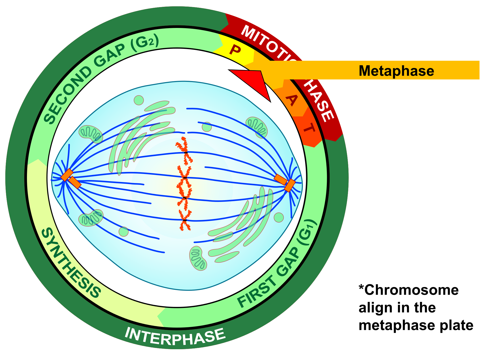
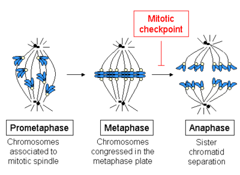

Metaphase
Makes sure everything is properly set up.

This stage is where chromosomes become attached to the spindle fibers.
Checkpoints

The checkpoints make sure that the chromosomes are binded to the kinetochore microtubules correctly, so that the chromosomes divide equally.
By going through this procedure, it prevents the chance of mutation. If the checkpoints aren't met, mitosis will be put on hold until all the problems are fixed.